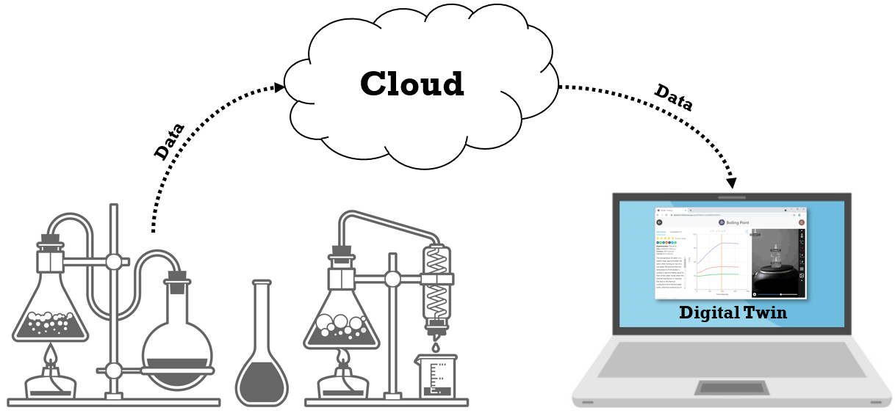
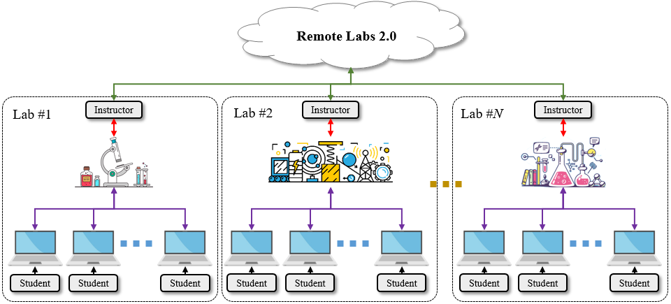
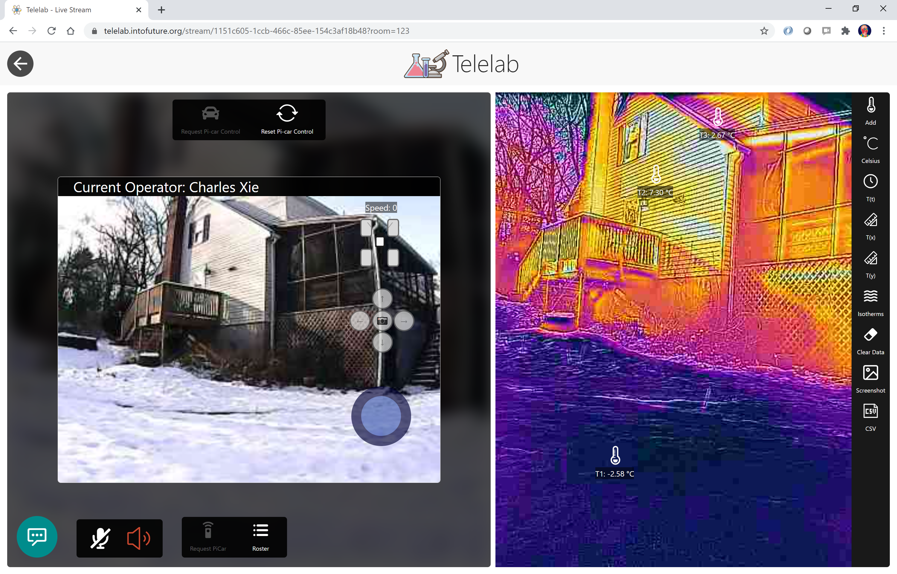
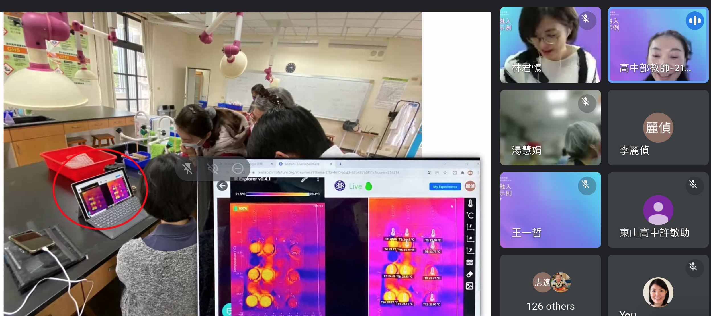

Telelab
Broadcast your scientific discoveries. Telelab brings real-world observation and laboratory experiences online — live, collaborative, and accessible from any web browser.
The idea
Telelab is a cyberinfrastructure IFI is developing to enhance distance learning of science and engineering — in formal and informal settings. It combines cyber-physical systems, digital twins, virtual and augmented reality, robotics, cloud and mobile computing, and teleconferencing to approximate real-world observation and laboratory experiences in an online environment — through telepresence, scientific visualization, data synchronization, remote control, mixed reality, and social interaction.


Remote Labs 2.0
Like video conferencing software, Telelab lets many students access and participate in ongoing and past experiments from a web browser, and lets any educator create, operate, and manage their own remote labs. We envision it as an implementation of Remote Labs 2.0 — a distributed model, in contrast to the centralized first generation. With Telelab, even students can start their own remote labs and share with others — imagine a student in the United States running an experiment and sharing it live with students in Africa.

Open, equitable, global
Based on the Telelab platform, IFI is developing and testing optimal strategies and pedagogies for engaging students of socioeconomic diversity and broadening their participation in science. Over time, Telelab will become a science hub where millions of students can share, access, and learn from a large library of experiments — anytime, anywhere. Such open online labs promise to democratize science learning and mitigate educational inequity, especially for under-resourced schools.

Used around the world
Telelab is being used by science educators around the world.

What teachers say
Students cannot touch the real objects, but they can add thermometers onto the real objects. This is really cool! They can do hands-on investigations even without touching the objects. It would be even better if they can have more interactions with the objects.
In real labs, I ask students to do free exploration before giving specific instructions on where to observe and what to analyze. Then we share, as a whole class, what we find. With Telelab, I can do the same thing. They can add thermometers anywhere and share what they find. Some focus on purple colors (representing cold) and some focus on red colors (representing hot). From their choices of places, they start to ask questions of why it happens as it shows.
With this technology, science learning will involve diverse voices from students, about their houses, gardens, and rivers in their community, to name a few. It's more than extended access through online platforms.
This was awesome and really wowed me in the details of the site. The tools were amazing and worked great. Having the live feature is a bonus and is awesome for interaction and being able to remotely teach students.
What students say
I thought it was really cool that although we are all so far apart in distance, we were all able to participate in the live experiment together in real time. I liked the thermal cameras — since we were not able to be there in person, it gave us a nice visual representation of what was happening during the experiments.
[I like] being able to watch in real time as a reaction is taking place, and getting to chat and talk with the teacher and discuss real-time results like you would in an actual classroom.